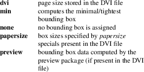
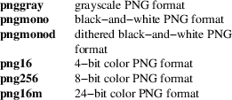
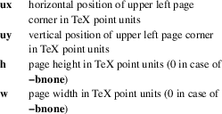
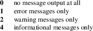
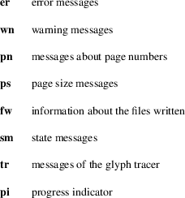
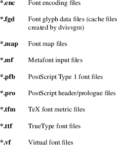

dvisvgm − converts DVI and EPS files to the XML−based SVG format
dvisvgm [options] file[.dvi]
dvisvgm −−eps [options] file1[.eps] file2[.eps] ...
dvisvgm −−pdf [options] file[.pdf]
The command−line utility dvisvgm converts DVI files, as generated by TeX/LaTeX, to the XML−based scalable vector graphics format SVG. It supports the classic DVI version 2 as well as version 3 (created by pTeX in vertical mode), and the XeTeX versions 5 to 7 which are also known as XDV. Besides the basic DVI commands, dvisvgm also evaluates many so−called specials which heavily extend the capabilities of the plain DVI format. For a more detailed overview, see section Supported Specials below.
Since the current SVG standard 1.1 doesn’t specify multi−page graphics, dvisvgm creates separate SVG files for each DVI page. Because of compatibility reasons, only the first page is converted by default. In order to select a different page or arbitrary page sequences, use option −p which is described below.
SVG is a vector−based graphics format and therefore dvisvgm tries to convert the glyph outlines of all fonts referenced in a DVI page section to scalable path descriptions. The fastest way to achieve this is to extract the path information from vector−based font files available in PFB, TTF, or OTF format. If dvisvgm is able to find such a file, it extracts all necessary outline information about the glyphs from it.
However, TeX’s main source for font descriptions is Metafont, which produces bitmap output (GF files). That’s why not all obtainable TeX fonts are available in a scalable format. In these cases, dvisvgm tries to vectorize Metafont’s output by tracing the glyph bitmaps. The results are not as perfect as most (manually optimized) PFB or OTF counterparts, but are nonetheless really nice in most cases.
When running dvisvgm without option −−no−fonts, it creates font elements (<font>...</font>) to embed the font data into the SVG files. Unfortunately, only few SVG renderers support these elements yet. Most web browsers and vector graphics applications don’t evaluate them properly so that the text components of the resulting graphics might look strange. In order to create more compatible SVG files, command−line option −−no−fonts can be given to replace the font elements by plain graphics paths. Most web browsers (but only few external SVG renderers) also support WOFF and WOFF2 fonts that can be used instead of the default SVG fonts. Option −−font−format offers the functionality to change the format applied to the fonts being embedded. This, however, only works when converting DVI files. Text present in PDF and PostScript files is always converted to path elements.
dvisvgm provides a POSIX−compliant command−line interface with short and long option names. They may be given before and/or after the name of the file to be converted. Also, the order of specifying the options is not significant, i.e. you can add them in any order without changing dvisvgm’s behavior. Certain options accept or require additional parameters which are directly appended to or separated by whitespace from a short option (e.g. −v0 or −v 0). Long options require an additional equals sign (=) between option name and argument but without any surrounding whitespace (e.g. −−verbosity=0). Multiple short options that don’t expect a further parameter can be combined after a single dash (e.g. −ejs rather than −e −j −s).
Long option names may also be shortened by omitting trailing characters. As long as the shortened name is unambiguous, it’s recognized and applied. For example, option −−exact−bbox can be shortened to −−exact, −−exa, or −−ex. In case of an ambiguous abbreviation, dvisvgm prints an error message together with all matching option names.
−b, −−bbox=fmt
Sets the bounding box of the generated SVG graphic to the specified format. This option only affects the conversion of DVI files. SVG documents generated from PDF and PostScript always inherit the bounding boxes of the input files.
Parameter fmt takes either one of the format specifiers listed below, or a sequence of four comma− or whitespace−separated length values x1, y1, x2 and y2. The latter define the absolute coordinates of two diagonal corners of the bounding box. Each length value consists of a floating point number and an optional length unit (pt, bp, cm, mm, in, pc, dd, cc, or sp). If the unit is omitted, TeX points (pt) are assumed.
It’s also possible to give only one length value l. In this case, the minimal bounding box is computed and enlarged by adding (−l,−l) to the upper left and (l,l) to the lower right corner.
Additionally, dvisvgm also supports the following format specifiers:
International DIN/ISO paper sizes
An, Bn, Cn, Dn, where n is a non−negative integer, e.g. A4 or a4 for DIN/ISO A4 format (210mm × 297mm).
North American paper sizes
invoice, executive, legal, letter, ledger
Special bounding box sizes

Page orientation
The default page orientation for DIN/ISO and American paper sizes is portrait, i.e. width < height. Appending −landscape or simply −l to the format string switches to landscape mode (width > height). For symmetry reasons you can also explicitly add −portrait or −p to indicate the default portrait format. Note that these suffixes are part of the size string and not separate options. Thus, they must directly follow the size specifier without additional blanks. Furthermore, the orientation suffixes can’t be used with dvi, min, and none.
Note
Option −b, −−bbox only affects the
bounding box and does not transform the page content. Hence,
if you choose a landscape format, the page won’t be
rotated.
−B, −−bitmap−format=fmt
This option sets the image format used to embed bitmaps extracted from PostScript or PDF data. By default, dvisvgm embeds all bitmaps as JPEG images because it’s the most compact of the two formats supported by SVG. To select the alternative lossless PNG format, −−bitmap−format=png can be used. There are some more format variants dvisvgm currently supports even though jpeg and png should be sufficient in most cases. The following list gives an overview of the known format names which correspond to names of Ghostscript output devices.

Since the collection of supported output devices can vary among local Ghostscript installations, not all formats may be available in some environments. dvisvgm quits with a PostScript error message if the selected output format requires a locally unsupported output device.
The two JPEG format specifiers accept an optional parameter to set the IJG quality level which must directly follow the format specifier separated by a colon, e.g. −−bitmap−format=jpeg:50. The quality value is an integer between 0 and 100. Higher values result in better image quality but lower compression rates and therefore larger files. The default quality level is 75 which is applied if no quality parameter is given or if it’s set to 0.
−C, −−cache[=dir]
To speed up the conversion process of bitmap fonts, dvisvgm saves intermediate conversion information in cache files. By default, these files are stored in $XDG_CACHE_HOME/dvisvgm/ or $HOME/.cache/dvisvgm if XDG_CACHE_HOME is not set. If you prefer a different location, use option −−cache to overwrite the default. Furthermore, it is also possible to disable the font caching mechanism completely with option −−cache=none. If argument dir is omitted, dvisvgm prints the path of the default cache directory together with further information about the stored fonts. Additionally, outdated and corrupted cache files are removed.
−j, −−clipjoin
This option tells dvisvgm to compute all intersections of clipping paths itself rather than delegating this task to the SVG renderer. The resulting SVG files are more portable because some SVG viewers don’t support intersecting clipping paths which are defined by clipPath elements containing a clip−path attribute.
−−color
Enables colorization of messages printed during the conversion process. The colors can be customized via environment variable DVISVGM_COLORS. See the Environment section below for further information.
−−colornames
By default, dvisvgm exclusively uses RGB values of the form #RRGGBB or #RGB to represent colors in the SVG file. The latter is a short form for colors whose RGB components each consist of two identical hex digits, e.g. #123 equals #112233. According to the SVG standard, it’s also possible to use color names (like black and darkblue) for a limited number of predefined colors (https://www.w3.org/TR/SVG11/types.html#ColorKeywords). In order to apply these color names rather than their RGB values, call dvisvgm with option −−colornames. All colors without an SVG color name will still be represented by RGB values.
−−comments
Adds comments with further information about selected data to the SVG file. Currently, only font elements and font CSS rules related to native fonts are annotated.
embed−bitmaps
Embeds the contents of bitmap files into the generated SVG files instead of adding file references. Because of the base64−encoded data, the SVG files are usually much bigger but at the same time more portable because they don’t rely on external bitmap files.
This option only affects bitmaps referenced in DVI/XDV files, e.g. added by \includegraphics. Bitmaps in PostScript or PDF files are always embedded. Also see option bitmap−format.
−E, −−eps
If this option is given, dvisvgm does not expect a DVI but a single or multiple EPS input files, and tries to convert them to SVG. In order to do so, a single psfile special command is created and forwarded to the PostScript special handler. This option is only available if dvisvgm was built with PostScript support enabled, and requires Ghostscript to be available. See option −−libgs for further information.
−e, −−exact−bbox
This option tells dvisvgm to compute the precise bounding box of each character. By default, the values stored in a font’s TFM file are used to determine a glyph’s extent. As these values are intended to implement optimal character placements and are not designed to represent the exact dimensions, they don’t necessarily correspond with the bounds of the visual glyphs. Thus, width and/or height of some glyphs may be larger (or smaller) than the respective TFM values. As a result, this can lead to clipped characters at the bounds of the SVG graphics. With option −−exact−bbox given, dvisvgm analyzes the actual shape of each character and derives a usually tight bounding box.
−f, −−font−format=format
Selects the file format used to embed font data into the generated SVG output when converting DVI or PDF files. The latter require the new mutool−based PDF handler introduced with dvisvgm 3.0 (also see option −−pdf). Option −−font−format has no effect when converting PDF or PostScript files using Ghostscript. Text fragments present in these files are then always converted to path elements.
Following formats are supported: SVG (that’s the default), TTF (TrueType), WOFF, and WOFF2 (Web Open Font Format version 1 and 2). By default, dvisvgm creates unhinted fonts that might look bad on low−resolution devices. In order to improve the display quality, the generated TrueType, WOFF, or WOFF2 fonts can be autohinted. The autohinter is enabled by appending ,autohint or ,ah to the font format, e.g. −−font−format=woff,autohint or −−fwoff,ah. This functionality requires the ttfautohint library (https://freetype.org/ttfautohint). If it’s not available or can’t be found, dvisvgm issues a corresponding warning message.
Option −−font−format is only available if dvisvgm was built with WOFF support enabled.
−m, −−fontmap=filenames
Loads and evaluates a single font map file or a sequence of font map files. These files are required to resolve font file names and encodings. dvisvgm does not provide its own map files but tries to read available ones coming with dvips or dvipdfm. If option −−fontmap is omitted, dvisvgm looks for the default map files ps2pk.map, pdftex.map, dvipdfm.map, and psfonts.map (in this order). Otherwise, the files given as option arguments are evaluated in the given order. Multiple filenames must be separated by commas without leading and/or trailing whitespace.
By default, redefined mappings do not replace previous ones. However, each filename can be preceded by an optional mode specifier (+, −, or =) to change this behavior:
+mapfile
Only those entries in the given map file that don’t redefine a font mapping are applied, i.e. fonts already mapped keep untouched. That’s also the default mode if no mode specifier is given.
−mapfile
Ensures that none of the font mappings defined in the given map file are used, i.e. previously defined mappings for the specified fonts are removed.
=mapfile
All mappings defined in the map file are applied. Previously defined settings for the same fonts are replaced.
If the first filename in the filename sequence is preceded by a mode specifier, dvisvgm loads the default font map (see above) and applies the other map files afterwards. Otherwise, none of default map files will be loaded automatically.
Examples: −−fontmap=myfile1.map,+myfile2.map loads myfile1.map followed by myfile2.map where all redefinitions of myfile2.map are ignored. −−fontmap==myfile1.map,−myfile2.map loads the default map file followed by myfile1.map and myfile2.map where all redefinitions of myfile1.map replace previous entries. Afterwards, all definitions for the fonts given in myfile2.map are removed from the font map tree.
For further information about the map file formats and the mode specifiers, see the manuals of dvips (https://tug.org/texinfohtml/dvips.html) and dvipdfm (https://ctan.org/tex-archive/dviware/dvipdfm).
−−grad−overlap
Tells dvisvgm to create overlapping grid segments when approximating color gradient fills (also see option −−grad−segments below). By default, adjacent segments don’t overlap but only touch each other like separate tiles. However, this alignment can lead to visible gaps between the segments because the background color usually influences the color at the boundary of the segments if the SVG renderer uses anti−aliasing to create smooth contours. One way to avoid this and to create seamlessly touching color regions is to enlarge the segments so that they extend into the area of their right and bottom neighbors. Since the latter are drawn on top of the overlapping parts, the visible size of all segments keeps unchanged. Just the former gaps disappear as the background is now completely covered by the correct colors. Currently, dvisvgm computes the overlapping segments separately for each patch of the mesh (a patch mesh may consist of multiple patches of the same type). Therefore, there still might be visible gaps at the seam of two adjacent patches.
−−grad−segments=number
Determines the maximal number of segments per column and row used to approximate gradient color fills. Since SVG 1.1 only supports a small subset of the shading algorithms available in PostScript, dvisvgm approximates some of them by subdividing the area to be filled into smaller, monochromatic segments. Each of these segments gets the average color of the region it covers. Thus, increasing the number of segments leads to smaller monochromatic areas and therefore a better approximation of the actual color gradient. As a drawback, more segments imply bigger SVG files because every segment is represented by a separate path element.
Currently, dvisvgm supports free− and lattice−form triangular patch meshes as well as Coons and tensor−product patch meshes. They are approximated by subdividing the area of each patch into a n×n grid of smaller segments. The maximal number of segments per column and row can be changed with option −−grad−segments.
−−grad−simplify=delta
If the size of the segments created to approximate gradient color fills falls below the given delta value, dvisvgm reduces their level of detail. For example, Bézier curves are replaced by straight lines, and triangular segments are combined to tetragons. For a small delta, these simplifications are usually not noticeable but reduce the size of the generated SVG files significantly.
−h, −−help[=mode]
Prints a short summary of all available command−line options. The optional mode parameter is an integer value between 0 and 2. It selects the display variant of the help text. Mode 0 lists all options divided into categories with section headers. This is also the default if dvisvgm is called without parameters. Mode 1 lists all options ordered by the short option names, while mode 2 sorts the lines by the long option names.
A values in brackets after the description text indicate the default parameter of the option. They are applied if an option with a mandatory parameter is not used or if an optional parameter is omitted. For example, option −−bbox requires a size parameter which defaults to min if −−bbox is not used. Option −−zip, which isn’t applied by default, accepts an optional compression level parameter. If it’s omitted, the stated default value 9 is used.
−−keep
Disables the removal of temporary files as created by Metafont (usually .gf, .tfm, and .log files) or the TrueType/WOFF module.
−−libgs=path
This option is only available if the Ghostscript library is not directly linked to dvisvgm and if PostScript support was not completely disabled during compilation. In this case, dvisvgm tries to load the shared GS library dynamically during runtime. By default, it expects the library’s name to be libgs.so.X (on Unix−like systems, where X is the ABI version of the library) or gsdll32.dll/gsdll64.dll (Windows). If dvisvgm doesn’t find the library, option −−libgs can be used to specify the correct path and filename, e.g. −−libgs=/usr/local/lib/libgs.so.9 or −−libgs=\gs\gs9.25\bin\gsdll64.dll.
Alternatively, it’s also possible to assign the path to environment variable LIBGS, e.g. export LIBGS=/usr/local/lib/libgs.so.9 or set LIBGS=\gs\gs9.25\bin\gsdll63.dll. LIBGS has less precedence than the command−line option, i.e. dvisvgm ignores variable LIBGS if −−libgs is given.
−L, −−linkmark=style
Selects the method how to mark hyperlinked areas. The style argument can take one of the values none, box, and line, where box is the default, i.e. a rectangle is drawn around the linked region if option −−linkmark is omitted. Style argument line just draws the lower edge of the bounding rectangle, and none tells dvisvgm not to add any visible objects to hyperlinks. The lines and boxes get the current text color selected. In order to apply a different, constant color, a colon followed by a color specifier can be appended to the style string. A color specifier is either a hexadecimal RGB value of the form #RRGGBB, or a dvips color name (https://en.wikibooks.org/wiki/LaTeX/Colors#The_68_standard_colors_known_to_dvips).
Moreover, argument style can take a single color specifier to highlight the linked region by a frameless box filled with that color. An optional second color specifier separated by a colon selects the frame color.
Examples: box:red or box:#ff0000 draws red boxes around the linked areas. yellow:blue creates yellow filled rectangles with blue frames.
−l, −−list−specials
Prints a list of registered special handlers and exits. Each handler processes a set of special statements belonging to the same category. In most cases, these categories are identified by the prefix of the special statements which is usually a leading string followed by a colon or a blank, e.g. color or ps. The listed handler names, however, don’t need to match these prefixes, e.g. if there is no common prefix or if functionality is split into separate handlers in order to allow them to be disabled separately using option −−no−specials. All special statements not covered by one of the special handlers are silently ignored.
−M, −−mag=factor
Sets the magnification factor applied in conjunction with Metafont calls prior tracing the glyphs. The larger this value, the better the tracing results. Nevertheless, large magnification values can cause Metafont arithmetic errors due to number overflows. So, use this option with care. The default setting usually produces nice results.
−−no−merge
Puts every single character in a separate text element with corresponding x and y attributes. By default, new text or tspan elements are only created if a string starts at a location that differs from the regular position defined by the characters' advance values.
−−no−mktexmf
Suppresses the generation of missing font files. If dvisvgm can’t find a font file through the kpathsea lookup mechanism, it calls the external tools mktextfm or mktexmf. This option disables these calls.
−n, −−no−fonts[=variant]
If this option is given, dvisvgm doesn’t create SVG font elements but uses paths instead. The resulting SVG files tend to be larger but are concurrently more compatible with most applications that don’t support SVG fonts. The optional argument variant selects the method how to substitute fonts by paths. Variant 0 creates path and use elements in order to avoid lengthy duplicates. Variant 1 creates path elements only. Option −−no−fonts implies −−no−styles.
−c, −−scale=sx[,sy]
Scales the page content horizontally by sx and vertically by sy. This option is equivalent to −TSsx,sy.
−S, −−no−specials[=names]
Disable processing of special commands embedded in the DVI file. If no further parameter is given, all specials are ignored. To disable a selected set of specials, an optional comma−separated list of names can be appended to this option. A name is the unique identifier referencing the intended special handler as listed by option −−list−specials.
−−no−styles
By default, dvisvgm creates CSS styles and class attributes to reference fonts. This variant is more compact than adding the complete font information to each text element over and over again. However, if you prefer direct font references, the default behavior can be disabled with option −−no−styles.
−O, −−optimize[=modules]
Applies several optimizations on the generated SVG tree to reduce the file size. The optimizations are performed by running separate optimizer modules specified by optional argument modules. It may consist of a single module name or a comma−separated list of several module names. The corresponding modules are executed one by one in the given order and thus transform the XML tree gradually.
The following list describes the currently available optimizer modules.
list
Lists all available optimizer modules and exits.
none
If this argument is given, dvisvgm doesn’t apply any optimization. none can’t be combined with other module names.
all
Performs all optimizations listed below. This is also the default if option −−optimize is used without argument. The modules are executed in a predefined order that usually leads to the best results. all can’t be combined with other module names.
collapse−groups
Combines nested group elements (<g>...</g>) that contain only a single group each. If possible, the group attributes are moved to the outermost element of the processed subtree. This module also unwraps group elements that have no attributes at all.
group−attributes
Creates groups (<g>...</g>) for common attributes around adjacent elements. Each attribute is moved to a separate group so that multiple common attributes lead to nested groups. They can be combined by applying optimizer module collapse−groups afterwards. The algorithm only takes inheritable properties, such as fill or stroke−width, into account and only removes them from an element if none of the other attributes, like id, prevents this.
reassign−clippaths
Collects all clipPath elements that differ only by their IDs. Afterwards, the duplicates are removed so that only one remains. All clip−path attributes referencing one of the duplicates are updated accordingly.
remove−clippaths
Removes all redundant clipPath elements. This optimization was already present in former versions of dvisvgm and was always applied by default. This behavior is retained, i.e. dvisvgm executes this module even if option −−optimize is not given. You can use argument none to prevent that.
simplify−text
If a text element only contains whitespace nodes and tspan elements, all common inheritable attributes of the latter are moved to the enclosing text element. All tspan elements without further attributes are unwrapped.
simplify−transform
Tries to shorten all transform attributes. This module combines the transformation commands of each attribute and decomposes the resulting transformation matrix into a sequence of basic transformations, i.e. translation, scaling, rotation, and skewing. If this sequence is shorter than the equivalent matrix expression, it’s assigned to the attribute. Otherwise, the matrix expression is used.
−o, −−output=pattern
Sets the pattern that determines the names of the generated SVG files, optionally including the file path. The required parameter pattern may consist of an arbitrary sequence of characters which make up the filenames or file paths relative to the current working directory. With the exception of the following mentioned variables and expressions, all characters are treated as static parts of the filenames/folders and are therefore identical for all pages processed during a run of dvisvgm. The strings %f, %p, %P, %n, %N, %hd, %ho, and %hc are variables that can be used as part of the pattern. %f expands to the base name of the DVI file, i.e. the filename without suffix, %p is the current page number, and %P the total number of pages in the DVI file. The variables %n and %N expand to the number of the current file being converted (starting at 1) and the total number of files given, respectively.
An optional number (0−9) specified directly after the percent sign of a variable holding a numeric value denotes the minimal number of digits to be created. If a particular value consists of less digits, the number is padded with leading zeros. Example: %3p enforces 3 digits for the current page number (001, 002, etc.). Without an explicit width specifier, %p gets the same number of digits as %P.
If you need more control over the numbering, you can use arithmetic expressions as part of the pattern. The syntax is %(expr) where expr may contain additions, subtractions, multiplications, and integer divisions with common precedence. The variables p and P contain the current page number and the total number of pages, respectively. For example, −−output="%f−%(p−1)" creates filenames where the numbering starts with 0 rather than 1.
The variables %hX contain different hash values computed from the DVI page data and the options given on the command−line. %hd and %hc are only set if option −−page−hashes is present. Otherwise, they are empty. For further information, see the description of option −−page−hashes below.
The default pattern is %f−%p.svg if the DVI file consists of more than one page, and %f.svg otherwise. That means, a DVI file foo.dvi is converted to foo.svg if foo.dvi is a single−page document. Otherwise, multiple SVG files foo−01.svg, foo−02.svg, etc. are produced. In Windows environments, the percent sign indicates dereferenced environment variables, and must therefore be protected by a second percent sign, e.g. −−output=%%f−%%p.
−p, −−page=ranges
This option selects the pages to be processed. Parameter ranges consists of a comma−separated list of single page numbers and/or page ranges. A page range is a pair of numbers separated by a hyphen, e.g. 5−12. Thus, a page sequence might look like this: 2−4,6,9−12,15. It doesn’t matter if a page is given more than once or if page ranges overlap. dvisvgm always extracts the page numbers in ascending order and converts them only once.
In order to stay compatible with previous versions, the default page sequence is 1. dvisvgm therefore converts only the first page and not the whole document if option −−page is omitted. Usually, page ranges consist of two numbers denoting the first and last page to be converted. If the conversion should start at page 1, or if it should continue up to the last DVI page, the first or second range number can be omitted, respectively. Example: −−page=−10 converts all pages up to page 10, −−page=10− converts all pages starting with page 10. Please consider that the page values don’t refer to the page numbers printed on the corresponding page. Instead, the physical page count is expected, where the first page always gets number 1.
At the end of the range sequence an optional filter specifier can be added. Currently, the two filters :even and :odd are supported which restrict the preceding values to even or odd numbers. For example, −−page=1−11,20:even is equivalent to −−page=2,4,6,8,10,20.
−H, −−page−hashes[=params]
If this option is given, dvisvgm computes hash values of all pages to be processed. As long as the page contents don’t change, the hash value of that page stays the same. This property can be used to determine whether a DVI page must be converted again or can be skipped in consecutive runs of dvisvgm. This is done by propagating the hash value to variable %hd which can be accessed in the output pattern (see option −−output). By default, dvisvgm changes the output pattern to %f−%hd if option −−page−hashes is given. As a result, all SVG file names contain the hash value instead of the page number. When calling dvisvgm again with option −−page−hashes with the same output pattern, it checks the existence of the SVG file to be created and skips the conversion if it’s already present. This also applies for consecutive calls of dvisvgm with different command−line parameters. If you want to force another conversion of a DVI file that hasn’t changed, you must remove the corresponding SVG files beforehand or add the parameter replace (see below). If you manually set the output pattern to not contain a hash value, the conversion won’t be skipped.
Alternatively, the output pattern may contain the variables %ho and %hc. %ho expands to a 32−bit hash representing the given command−line options that affect the generated SVG output, like −−no−fonts and −−precision. Different combinations of options and parameters lead to different hashes. Thus pattern %f−%hd−%ho creates filenames that change depending on the DVI data and the given command−line options. Variable %hc provides a combined hash computed from the DVI data and the command−line options. It has the same length as %hd.
Since the page number isn’t part of the file name by default, different DVI pages with identical contents get the same file name. Therefore, only the first one is converted while the others are skipped. To create separate files for each page, you can add the page number to the output pattern, e.g. −−output="%f−%p−%hc".
By default, dvisvgm uses the fast XXH64 hash algorithm to compute the values provided through %hd and %hc. 64−bit hashes should be sufficient for most documents with an average size of pages. Alternatively, XXH32 and MD5 can be used as well. The desired algorithm is specified by argument params of option −−page−hashes. It takes one of the strings MD5, XXH32, and XXH64, where the names can be given in lower case too, like −−page−hashes=md5. Since version 0.7.1, xxHash provides an experimental 128−bit hash function whose algorithm has been stabilized as of version 0.8. When using a version prior to 0.8, the 128−bit hash values can vary depending on the used xxHash version. If the corresponding API is available, dvisvgm supports the new hash function, and option −−page−hashes additionally accepts the algorithm specifier XXH128.
Finally, option −−page−hashes can take a second argument that must be separated by a comma. Currently, only the two parameters list and replace are evaluated, e.g. −−page−hashes=md5,list or −−page−hashes=replace. When list is present, dvisvgm doesn’t perform any conversion but just lists the hash values %hd and %hc of the pages specified by option −−page. Parameter replace forces dvisvgm to convert a DVI page even if a file with the target name already exists.
−P, −−pdf
If this option is given, dvisvgm does not expect a DVI but a PDF input file, and tries to convert it to SVG. Similar to the conversion of DVI files, only the first page is processed by default. Option −−page can be used to select different pages, page ranges, and/or page sequences.
If a Ghostcript version < 10.1.0 is found, dvisvgm uses Ghostscript to process the PDF file. In this case, the conversion is realized by creating a single pdffile special command which is forwarded to dvisvgm’s PostScript special handler. Therefore, this option is only available if dvisvgm was built with PostScript support enabled, and requires Ghostscript to be accessible. See option −−libgs for further information.
As of Ghostscript 10.1.0, this will no longer work due to the introduction of a new PDF interpreter. Therefore, an alternative conversion module based on mutool (https://mupdf.com/docs/mutool.html) has been introduced. It’s automatically invoked if Ghostscript can’t be used and if a working mutool executable is present in a directory which is part of the system’s search path.
Alternatively, environment variable DVISVGM_PDF_PROC can be used to select the PDF processor. The currently supported values are gs and mutool.
−d, −−precision=digits
Specifies the maximal number of decimal places applied to floating−point attribute values. All attribute values written to the generated SVG file(s) are rounded accordingly. The parameter digits accepts integer values from 0 to 6, where 0 enables the automatic selection of significant decimal places. This is also the default value if dvisvgm is called without option −−precision.
−−progress[=delay]
Enables a simple progress indicator shown when time−consuming operations like PostScript specials are processed. The indicator doesn’t appear before the given delay (in seconds) has elapsed. The default delay value is 0.5 seconds.
−r, −−rotate=angle
Rotates the page content clockwise by angle degrees around the page center. This option is equivalent to −TRangle.
−R, −−relative
SVG allows you to define graphics paths by a sequence of absolute and/or relative path commands, i.e. each command expects either absolute coordinates or coordinates relative to the current drawing position. By default, dvisvgm creates paths made up of absolute commands. If option −−relative is given, relative commands are created instead. This slightly reduces the size of the SVG files in most cases.
−−stdin
Tells dvisvgm to read the DVI or EPS input data from stdin instead from a file. Alternatively to option −−stdin, a single dash (−) can be given. The default name of the generated SVG file is stdin.svg which can be changed with option −−output.
−s, −−stdout
Don’t write the SVG output to a file but redirect it to stdout.
−−tmpdir[=path]
In some cases, dvisvgm needs to create temporary files to work properly. These files go to the system’s temporary folder by default, e.g. /tmp on Linux systems. Option −−tmpdir can be used to specify a different location. Please note that dvisvgm does not create this folder if it doesn’t exist. Therefore, you must ensure that it’s actually present before running dvisvgm.
In order to prevent colliding files caused by parallel calls of dvisvgm, the program doesn’t write the files directly in the specified directory but furthermore creates a uniquely named subfolder in there, where the temporary files will be placed. This can be prevented by appending // or \\ (on Windows) to the specified directory name. For example, −−tmpdir=.// creates the temporary files directly in the current working directory, while −−tmpdir=. places them in a dedicated subfolder of the current working directory.
If the optional parameter path of option −−tmpdir is omitted, dvisvgm prints the location of the system’s temp folder and exits.
−a, −−trace−all=[retrace]
This option forces dvisvgm to vectorize not only the glyphs actually required to render the SVG file correctly – which is the default –, but processes all glyphs of all fonts referenced in the DVI file. Because dvisvgm stores the tracing results in a font cache, all following conversions of these fonts will speed up significantly. The boolean option retrace determines how to handle glyphs already stored in the cache. By default, these glyphs are skipped. Setting argument retrace to yes or true forces dvisvgm to retrace the corresponding bitmaps again.
Note
This option only takes effect if font caching is active.
Therefore, −−trace−all cannot be
combined with option
−−cache=none.
−T, −−transform=commands
Applies a sequence of transformations to the SVG content. Each transformation is described by a command beginning with a capital letter followed by a list of comma−separated parameters. Following transformation commands are supported:
T tx[,ty]
Translates (moves/shifts) the page in direction of vector (tx,ty). If ty is omitted, ty=0 is assumed. The expected unit length of tx and ty are TeX points (1pt = 1/72.27in). However, there are several constants defined to simplify the unit conversion (see below).
S sx[,sy]
Scales the page horizontally by sx and vertically by sy. If sy is omitted, sy=sx is assumed.
R angle[,x,y]
Rotates the page clockwise by angle degrees around point (x,y). If the optional arguments x and y are omitted, the page will be rotated around its center depending on the chosen page format. When option −bnone is given, the rotation center is origin (0,0).
KX angle
Skews the page along the x−axis by angle degrees. Argument angle can take any value except 90+180k, where k is an integer.
KY angle
Skews the page along the y−axis by angle degrees. Argument angle can take any value except 90+180k, where k is an integer.
FH [y]
Mirrors (flips) the page at the horizontal line through point (0,y). Omitting the optional argument leads to y=h/2, where h denotes the page height (see pre−defined constants below).
FV [x]
Mirrors (flips) the page at the vertical line through point (x,0). Omitting the optional argument leads to x=w/2, where w denotes the page width (see pre−defined constants below).
M m1,...,m6
Applies a transformation described by the 3×3 matrix ((m1,m2,m3),(m4,m5,m6),(0,0,1)), where the inner triples denote the rows.
Note
All transformation commands of option −T,
−−transform are applied in the order of
their appearance. Multiple commands can optionally be
separated by spaces. In this case the whole transformation
string has to be enclosed in double quotes to keep them
together. All parameters are expressions of floating point
type. You can either give plain numbers or arithmetic terms
combined by the operators + (addition),
− (subtraction), * (multiplication),
/ (division) or % (modulo) with common
associativity and precedence rules. Parentheses may be used
as well.
Additionally, some pre−defined constants are provided:

Furthermore, you can use the 9 length constants pt, bp, cm, mm, in, pc, dd, cc, and sp, e.g. 2cm or 1.6in. Thus, option −TT1in,0R45 moves the page content 1 inch to the right and rotates it by 45 degrees around the page center afterwards.
For single transformations, there are also the short−hand options −c, −t and −r available. In contrast to the −−transform commands, the order of these options is not significant, so that it’s not possible to describe transformation sequences with them.
−t, −−translate=tx[,ty]
Translates (moves) the page content in direction of vector (tx,ty). This option is equivalent to −TTtx,ty.
−v, −−verbosity=level
Controls the type of messages printed during a dvisvgm run:

Note
By adding these values you can combine the categories. The
default level is 7, i.e. all messages are
printed.
−V, −−version[=extended]
Prints the version of dvisvgm and exits. If the optional argument is set to yes, the version numbers of the linked libraries are printed as well.
−z, −−zip[=level]
Creates a compressed SVG file with suffix .svgz. The optional argument specifies the compression level. Valid values are in the range of 1 to 9 (default value is 9). Larger values cause better compression results but may take slightly more computation time.
−Z, −−zoom=factor
Multiplies the values of the width and height attributes of the SVG root element by argument factor while the coordinate system of the graphic content is retained. As a result, most SVG viewers zoom the graphics accordingly. If a negative zoom factor is given, the width and height attributes are omitted.
dvisvgm supports several special commands that enrich the DVI command set with additional instructions for features, like color, graphics, and hyperlinks. The term special command, or just special, originates from the TeX command \special{...} which does almost nothing. TeX only forwards the whole command to the DVI file and delegates its execution to the DVI driver. The DVI driver can then decide to either process or ignore it, depending on the supported statements. The parameter of TeX’s \special command is given in curly braces and may consist of an arbitrary character sequence representing the actual instruction, for example color Red.
+ dvisvgm delegates the evaluation of special commands to dedicated handlers. Each handler is responsible for all special statements of the same command set, i.e. commands usually – but not necessarily – beginning with a common prefix. For example, all PDF specials start with the prefix pdf:, while the TPIC special set consists of 13 different commands without common identifier. The PDF specials are processed by dvisvgm’s pdf handler, the TPIC ones by the tpic handler. To get a list of the actually provided special handlers, use option −−list−specials (see above). The following list gives an overview of the special sets currently supported. The names of the handlers can also be used to disable the processing of individual sets of specials. For further information on this, see option −−no−specials.
bgcolor
Special statements for changing the background/page color. Currently, dvisvgm only supports the background statement as specified in the dvips manual (https://tug.org/texinfohtml/dvips.html#Color-specifications). Since SVG 1.1 doesn’t support background colors, dvisvgm inserts a rectangle of the chosen color into the generated SVG document. This rectangle always gets the same size as the selected or computed bounding box. This background color command is part of the color special set but is handled separately in order to let the user turn it off.
color
Statements of this command set provide instructions to change the text/paint color. For an overview of the exact syntax, see the documentation of dvips, for instance.
dvisvgm
dvisvgm offers its own small set of specials. The following list gives a brief overview.
dvisvgm:raw text
Adds an arbitrary sequence of XML nodes to the page section of the SVG document. dvisvgm checks syntax and proper nesting of the inserted elements but does not perform any validation, thus the user has to ensure that the resulting SVG is still valid. Opening and closing tags may be distributed among different raw specials. The tags themselves can also be split but must be continued with the immediately following raw special. Both syntactically incorrect and wrongly nested tags lead to error messages. Parameter text may also contain the expressions {?x}, {?y}, {?color}, and {?matrix} that expand to the current x or y coordinate, the current color, and current transformation matrix, respectively. Character sequence {?nl} expands to a newline character. Finally, constructions of the form {?(expr)} enable the evaluation of mathematical expressions which may consist of basic arithmetic operations including modulo. Like above, the variables x and y represent the current coordinates. Example: {?(−10*(x+2y)−5)}.
dvisvgm:rawdef text
This command is similar to dvisvgm:raw, but puts the XML nodes into the <defs> section of the SVG document currently being generated.
dvisvgm:rawset name ... dvisvgm:endrawset
This pair of specials marks the begin and end of a definition of a named raw SVG fragment. All dvisvgm:raw and dvisvgm:rawdef specials enclosed by dvisvgm:rawset and dvisvgm:endrawset are not evaluated immediately but stored together under the given name for later use. Once defined, the named fragment can be referenced throughout the DVI file by dvisvgm:rawput (see below). The two commands dvisvgm:rawset and dvisvgm:endrawset must not be nested, i.e. each call of dvisvgm:rawset has to be followed by a corresponding call of dvisvgm:endrawset before another dvisvgm:rawset may occur. Also, the identifier name must be unique throughout the DVI file. Using dvisvgm:rawset multiple times together with the same name leads to warning messages.
dvisvgm:rawput name
Inserts raw SVG fragments previously stored under the given name. dvisvgm distinguishes between fragments that were specified with dvisvgm:raw or dvisvgm:rawdef, and handles them differently: It inserts all dvisvgm:raw parts every time dvisvgm:rawput is called, whereas the dvisvgm:rawdef portions go to the <defs> section of the current SVG document only once.
dvisvgm:img width height file
Creates an image element at the current graphic position referencing the given file. JPEG, PNG, and SVG images can be used here. However, dvisvgm does not check the file format or the file name suffix. The lengths width and height can be given together with a unit specifier (see option −−bbox) or as plain floating point numbers. In the latter case, TeX point units are assumed (1in = 72.27pt).
dvisvgm:bbox lock
Locks the bounding box of the current page and prevents it from further updating, i.e. graphics elements added after calling this special are not taken into account in determining the extent of the bounding box.
dvisvgm:bbox unlock
Unlocks the previously locked bounding box of the current page so that it gets updated again when adding graphics elements to the page.
dvisvgm:bbox n[ew] name
Defines or resets a local bounding box called name. The name may consist of letters and digits. While processing a DVI page, dvisvgm continuously updates the (global) bounding box of the current page in order to determine the minimal rectangle containing all visible page components (characters, images, drawing elements etc.) Additionally to the global bounding box, the user can request an arbitrary number of named local bounding boxes. Once defined, these boxes are updated together with the global bounding box starting with the first character that follows the definition. Thus, the local boxes can be used to compute the extent of parts of the page. This is useful for scenarios where the generated SVG file is post−processed. In conjunction with special dvisvgm:raw, the macro {?bbox name} expands to the four values x, y, w, and h (separated by spaces) specifying the coordinates of the upper left corner, width, and height of the local box name. If box name wasn’t previously defined, all four values equal to zero.
dvisvgm:bbox width height [depth] [transform]
Updates the bounding box of the current page by embedding a virtual rectangle (x, y, width, height) where the lower left corner is located at the current DVI drawing position (x,y). If the optional parameter depth is specified, dvisvgm embeds a second rectangle (x, y, width, −depth). The lengths width, height, and depth can be given together with a unit specifier (see option −−bbox) or as plain floating point numbers. In the latter case, TeX point units are assumed (1in = 72.27pt). Depending on size and position of the virtual rectangle, this command either enlarges the overall bounding box or leaves it as is. It’s not possible to reduce its extent. This special should be used together with dvisvgm:raw in order to update the viewport of the page properly. By default, the box extents are assigned unchanged and, in particular, are not altered by transformation commands. In order to apply the current transformation matrix, the optional modifier transform can be added at the end of the special statement.
dvisvgm:bbox a[bs] x1 y1 x2 y2 [transform]
This variant of the bbox special updates the bounding box by embedding a virtual rectangle (x1,y1,x2,y2). The points (x1,y1) and (x2,y2) denote the absolute coordinates of two diagonal corners of the rectangle. As with the relative special variant described above, the optional modifier transform allows for applying the current transformation matrix to the bounding box.
dvisvgm:bbox f[ix] x1 y1 x2 y2 [transform]
This variant of the bbox special assigns an absolute (final) bounding box to the resulting SVG. After executing this command, dvisvgm doesn’t further alter the bounding box coordinates, except this special is called again later. The points (x1,y1) and (x2,y2) denote the absolute coordinates of two diagonal corners of the rectangle. As with the relative special variant described above, the optional modifier transform allows for applying the current transformation matrix to the bounding box.
The following TeX snippet adds two raw SVG elements to the output and updates the bounding box accordingly:
\special{dvisvgm:raw
<circle cx='{?x}' cy='{?y}' r='10' stroke='black'
fill='red'/>}%
\special{dvisvgm:bbox 10bp 10bp 10bp transform}%
\special{dvisvgm:bbox −10bp 10bp 10bp
transform}
\special{dvisvgm:raw
<path d='M50 200 L10 250 H100 Z' stroke='black'
fill='blue'/>}%
\special{dvisvgm:bbox abs 10bp 200bp 100bp 250bp
transform}
em
These specials were introduced with the emTeX distribution by Eberhard Mattes. They provide line drawing statements, instructions for embedding MSP, PCX, and BMP image files, as well as two PCL commands. dvisvgm supports only the line drawing statements and ignores all other em specials silently. A description of the command syntax can be found in the DVI driver documentation coming with emTeX (https://ctan.org/pkg/emtex).
html
The hyperref specification defines several variants on how to mark hyperlinked areas in a DVI file. dvisvgm supports the plain HyperTeX special constructs as created with hyperref package option hypertex. By default, all linked areas of the document are marked by a rectangle. Option −−linkmark allows you to change this behavior. See above for further details. Information on syntax and semantics of the HyperTeX specials can be found in the hyperref manual (https://ctan.org/pkg/hyperref).
papersize
The papersize special, which is an extension introduced by dvips, can be used to specify the widths and heights of the pages in the DVI file. It affects the page it appears on as well as all following pages until another papersize special is found. If there is more than one papersize special present on a page, dvisvgm applies the last one. However, in order to stay compatible with previous versions of dvisvgm that did not evaluate these specials, their processing must be explicitly enabled by adding option −−bbox=papersize on the command−line. Otherwise, dvisvgm ignores them and computes tight bounding boxes.
pdfTeX and dvipdfmx introduced several special commands related to the generation of PDF files. Currently, only pdf:mapfile, pdf:mapline, pdf:pagesize, and PDF hyperlink specials are supported by dvisvgm. The latter are the PDF pendants to the HTML HyperTeX specials generated by the hyperref package in PDF mode.
pdf:pagesize is similar to the papersize special (see above) which specifies the size of the current and all folowing pages. In order to actually apply the extents to the generated SVG files, option −−bbox=papersize must be given.
pdf:mapfile and pdf:mapline allow for modifying the font map tree while processing the DVI file. They are used by CTeX, for example. dvisvgm supports both, the dvips and dvipdfm font map format. For further information on the command syntax and semantics, see the documentation of \pdfmapfile in the pdfTeX user manual (https://ctan.org/pkg/pdftex).
ps
The famous DVI driver dvips (https://www.tug.org/texinfohtml/dvips.html) introduced its own set of specials in order to embed PostScript code into DVI files, which greatly improves the capabilities of DVI documents. One aim of dvisvgm is to completely evaluate all PostScript fragments and to convert as many of them as possible to SVG. In contrast to dvips, dvisvgm uses floating point arithmetics to compute the precise position of each graphic element, i.e. it doesn’t round the coordinates. Therefore, the relative locations of the graphic elements may slightly differ from those computed by dvips.
Since PostScript is a rather complex language, dvisvgm does not implement its own PostScript interpreter but relies on Ghostscript (https://ghostscript.com) instead. If the Ghostscript library was not linked to the dvisvgm binary, it is looked up and loaded dynamically during runtime. In this case, dvisvgm looks for libgs.so.X on Unix−like systems (supported ABI versions: 7,8,9), for libgs.X.dylib on macOS, and for gsdll32.dll or gsdll64.dll on Windows. You can override the default file names with environment variable LIBGS or the command−line option −−libgs. The library must be reachable through the ld search path (*nix) or the PATH environment variable (Windows). Alternatively, the absolute file path can be specified. If the library cannot be found, dvisvgm disables the processing of PostScript specials and prints a warning message. Use option −−list−specials to check whether PostScript support is available, i.e. entry ps is present.
The PostScript handler also recognizes and evaluates bounding box data generated by the preview package (https://ctan.org/pkg/preview) with option tightpage. If such data is present in the DVI file and if dvisvgm is called with option −−bbox=preview, dvisvgm sets the width and total height of the SVG file to the values derived from the preview data. Additionally, it prints a message showing the width, height, and depth of the box in TeX point units to the console. Especially, the depth value can be read by a post−processor to vertically align the SVG graphics with the baseline of surrounding text in HTML or XSL−FO documents, for example. Please note that SVG bounding boxes are defined by a width and (total) height. In contrast to TeX, SVG provides no means to differentiate between height and depth, i.e. the vertical extents above and below the baseline, respectively. Therefore, it is generally not possible to retrieve the depth value from the SVG file itself.
If you call dvisvgm with option −−bbox=min (the default) and preview data is present in the DVI file, dvisvgm doesn’t apply the preview extents but computes a bounding box that tightly encloses the page contents. The height, depth and width values written to console are adapted accordingly.
tpic
The TPIC special set defines instructions for drawing simple geometric objects. Some LaTeX packages, like eepic and tplot, use these specials to describe graphics.
dvisvgm file
Converts the first page of file.dvi to file.svg.
dvisvgm −p1−5 file
Converts the first five pages of file.dvi to file−1.svg,...,file−5.svg.
dvisvgm −p1− file
Converts all pages of file.dvi to separate SVG files.
dvisvgm −p1,3 −O file
Converts the first and third page of file.dvi to optimized SVG files.
dvisvgm − < file.dvi
Converts the first page of file.dvi to stdin.svg where the contents of file.dvi is read from stdin.
dvisvgm −z file
Converts the first page of file.dvi to file.svgz with default compression level 9.
dvisvgm −p5 −z3 −ba4−l −o newfile file
Converts the fifth page of file.dvi to newfile.svgz with compression level 3. The bounding box is set to DIN/ISO A4 in landscape format.
dvisvgm −−transform="R20,w/3,2h/5 T1cm,1cm S2,3" file
Converts the first page of file.dvi to file.svg where three transformations are applied.
dvisvgm uses the kpathsea library for locating the files that it opens. Hence, the environment variables described in the library’s documentation influence the converter.
If dvisvgm was linked without the Ghostscript library, and if PostScript support has not been disabled, the shared Ghostscript library is looked up during runtime via dlopen(). The environment variable LIBGS can be used to specify path and file name of the library.
The pre−compiled Windows versions of dvisvgm require a working installation of MiKTeX 2.9 or above. dvisvgm does not work together with the portable edition of MiKTeX because it relies on MiKTeX’s COM interface that is only accessible in a local installation. To enable the evaluation of PostScript specials, the original Ghostscript DLL gsdll32.dll must be present and reachable through the search path. 64−bit Windows builds require the 64−bit Ghostscript DLL gsdll64.dll. Both DLLs come with the corresponding Ghostscript installers available from https://ghostscript.com.
The environment variable DVISVGM_COLORS specifies the colors used to highlight various parts of dvisvgm’s message output. It is only evaluated if option −−color is given. The value of DVISVGM_COLORS is a list of colon−separated entries of the form gg=BF, where gg denotes one of the color group indicators listed below, and BF are two hexadecimal digits specifying the background (first digit) and foreground/text color (second digit). The color values are defined as follows: 0=black, 1=red, 2=green, 3=yellow, 4=blue, 5=magenta, 6=cyan, 7=gray, 8=bright red, 9=bright green, A=bright yellow, B=bright blue, C=bright magenta, D=bright cyan, E=bright gray, F=white. Depending on the terminal, the colors may differ. Rather than changing both the text and background color, it’s also possible to change only one of them: An asterisk (*) in place of a hexadecimal digit indicates the default text or background color of the terminal.
All malformed entries in the list are silently ignored.

Example: er=01:pi=*5 sets the colors of error messages (er) to red (1) on black (0), and those of progress indicators (pi) to cyan (5) on default background (*).
Variable DVISVGM_PDF_PROC allows you to select the desired PDF processor. dvisvgm requires either Ghostscript (version < 10.1.0) or mutool to process PDF files. IF DVISVGM_PDF_PROC is not set, dvisvgm tries to detect the available processors. See option −−pdf for further information. To select a specific PDF processor, you can set DVISVGM_PDF_PROC to gs or mutool which forces the use of Ghostscript and mutool respectively.
The location of the following files is determined by the kpathsea library. To check the actual kpathsea configuration you can use the kpsewhich utility.

tex(1), mf(1), mktexmf(1), grodvi(1), potrace(1), and the kpathsea library info documentation.
Project home page
https://dvisvgm.de
Code repository
https://github.com/mgieseki/dvisvgm
Please report bugs using the bug tracker at GitHub (https://github.com/mgieseki/dvisvgm/issues).
Written by Martin Gieseking <martin.gieseking@uos.de>
Copyright © 2005−2023 Martin Gieseking. Free use of this software is granted under the terms of the GNU General Public License (GPL) version 3 or, (at your option) any later version.